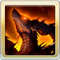

每回合受傷反擊(1次)
普攻後追加發動2技
無法連擊
普攻無法獲得奧義值
•自己即奧
•奧義傷害+150%(1T/無法消除)
•奧義上限+90%(1T/無法消除)
ウィルナス(リミテッド)
基本資訊
| 定位 | 攻擊 |
| 得意武器 | 格鬥/斧 |
| 種族 | 人類 |
| CV | 水中雅章 |
立繪
上限解放前||上限解放後奧義
| マグマチェンバー | |
| 火屬性12.5倍傷害 自己必TA(2T/含奧義回合/無視自己被動效果) |
主動技能
CD:12 |
ハドロンスマッシュ |
| 敵方全體12倍火屬性傷害 驅散1個強化效果 |
|
CD:8 |
フレイムクロー |
| 敵方單體8倍火屬性傷害 奧義值+20% 賦予自己劫火的灼麟效果(2T/無法消除) └攻擊+30%(個別乘算) └普攻上限+116萬 └奧義上限+50萬(加算) |
|
|  | 『朱』の睥睨 |
| 賦予自己『朱』的睥睨效果(無法消除) •防禦+300% •弱體免疫 •敵對心+50% •奧義後追加發動1技 #無法再次使用 |
被動技能
|
永久焦土 |
| 普攻給予傷害+50%(天司類加算) 每回合受傷反擊(1次) 普攻後追加發動2技 無法連擊 普攻無法獲得奧義值 |
|
|
理外の『朱』 |
| FC發動時 •自己即奧 •奧義傷害+150%(1T/無法消除) •奧義上限+90%(1T/無法消除) |